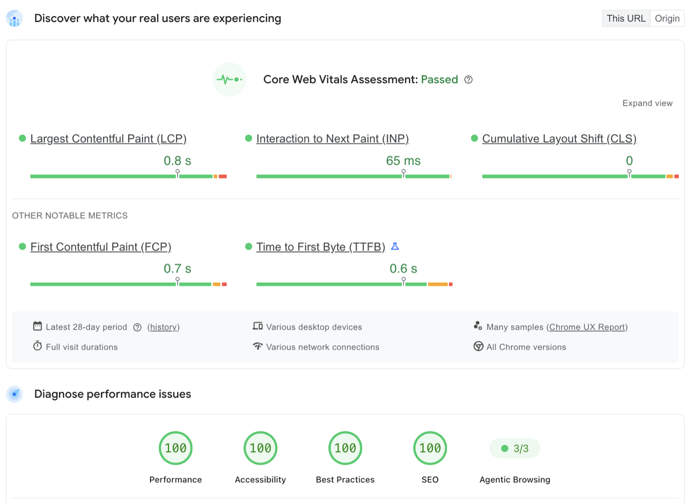

How to leave Magento 2 without losing orders, rankings, or integrations
A case study of moving a live store off Magento 2. The merchant is a US retailer of technical hardware selling to both businesses and consumers. Names are omitted at their request; every number below comes from the project's commit history, test suites, and migration runbooks.
The results, up front
- Mobile PageSpeed score, before → after
- 46 → 82 ✓
- Total Blocking Time, before → after
- 2,390 ms → 90 ms ✓
- Magento URLs preserved as permanent redirects
- 11,172 ✓
- Historical orders carried over
- 60,898 ✓
- Product images migrated byte-exact
- 1,625 ✓
- Admin surfaces store staff run without a developer
- 18 ✓
- Pricing drift across 5,730 replayed production orders
- $0.00 ✓
The CRM, payments, tax, and warehouse integrations all kept working through cutover, most syncing within seconds of an event. One mid-size server and one managed Postgres database replaced a fleet of app servers, five Redis nodes, and a search cluster. The rest of this post explains how, including the parts that went wrong.
Why the merchant left Magento
The store had run on Magento 2 for years. It worked, but every change was slow and expensive, the hosting estate had grown into a sprawl of services nobody wanted to touch, and the front end was losing the Core Web Vitals race that increasingly decides search rankings. The business also runs a serious B2B motion (sales reps, quotes, purchase orders, credit terms, tax-exempt customers) that Magento handled through a pile of extensions and manual workarounds.
The decision was not "Magento is bad." The decision was that the cost of standing still had exceeded the cost of moving.
The replacement is a custom storefront: Next.js and TypeScript, PostgreSQL, Meilisearch for catalog search, HubSpot as the CRM system of record for the sales team, Authorize.net for payments, and TaxJar for sales tax. One codebase, one database, one server.
Fear one: "will my numbers still be right?"
This is the fear that stops most replatforms, and it deserves to. Pricing bugs are silent. A store that renders beautifully while quietly computing discounts wrong is worse than a slow store.
We treated pricing as a formal contract, not a feature:
Twelve money laws. The pricing engine's guarantees are written down as twelve executable invariants: the order subtotal must equal the sum of its line totals exactly, the grand total must equal subtotal minus discount plus shipping plus tax, discounts can never exceed the subtotal or push a line below zero, every stored amount is a non-negative value with exactly two decimals, and so on. These are not comments in a wiki. They are code, and they run in four places: property-based tests, a frozen order corpus, integration tests against the real database, and a reconciliation job in production.
Integer cents, never floats. All money math happens in whole cents, parsed from strings. Discount allocation across line items uses largest-remainder apportionment, so a $10 discount spread over three lines never loses or invents a cent.
A 5,730-order replay harness. Before cutover, we extracted thousands of real historical orders and froze their financial outcomes as a baseline. Every test run rebuilds each order's cart from the order's own data and pushes it through the current pricing engine, then compares subtotal, discount, tax base, grand total, and every line total against the frozen baseline. The tolerance is zero: exact-cent string equality on 5,730 orders. The corpus is stratified on purpose: it includes every post-launch order, every order with both shipping and tax, all 2,730 discounted orders (the only ones that exercise discount apportionment), and orders up to 37 line items.
We proved the harness works by breaking the engine on purpose. A safety net you have never seen catch anything might be decorative. So we mutated the engine deliberately: shifting a discount clamp by a single cent flagged 2,728 of the 5,730 orders and named every order and field that moved. Removing one clamp, losing one leftover cent in allocation, and mis-padding a formatted amount were each injected as bugs, and each was caught by a different layer.
The contract is protected from its own developers. CI runs a tamper guard that executes the money test suite and asserts a minimum passing count, so nobody can quietly exclude a test file and stay green (that exact bypass happened once before the guard existed, which is why it exists). Any change to the pricing engine, the laws, or the frozen corpus requires an explicit human sign-off marker in the commit history, and the guard runs the base branch's own copy of itself so a pull request cannot edit the guard to approve its own changes.
Did all this ceremony ever pay off? Yes, dramatically. A data re-import once inserted a second, identical set of line items into 60,898 historical orders. No money moved and nothing looked wrong in the admin. The first law (subtotal equals the sum of line totals) flagged it because every affected order's lines suddenly summed to exactly twice the subtotal. The repair script that fixed roughly 349,000 duplicate rows was itself dry-run by default, backed up every table first, and was gated on an exact parity check before and after.
Fear two: "will Google forget my store exists?"
A replatform is a mass URL migration whether you plan it or not. We planned it.
- 11,020 exact-path redirects plus 152 pattern redirects were extracted from Magento's rewrite tables and legacy htaccess rules, and are served as permanent (301) redirects from middleware, before any caching layer can interfere. A subtle trap we hit: issuing redirects from inside a statically cached page can bake a broken redirect into the cache. Redirects must live upstream of the cache, and now they do.
- The sitemap is generated, not maintained. It builds from live products and categories, excludes anything unreachable or disabled, and filters out any URL the middleware would redirect, so search engines are never sent somewhere that bounces.
- Structured data everywhere it matters: Organization, Product with offers, and breadcrumb schemas emitted from typed helpers rather than hand-edited JSON.
- Discontinued products get temporary (307) redirects to their category or successor, driven from a database field store staff can edit, because a product that comes back should get its URL back.
On performance, the wins came from architecture rather than tricks. Nearly the whole shop renders as static pages regenerated in the background, so most visitors are served from cache in milliseconds. Third-party marketing scripts (tag manager, CRM chat and tracking, roughly 550KB of JavaScript) load only after the visitor's first interaction, taking them out of the critical path entirely. A regression test suite pins each of these architectural rules in CI, because we re-broke several of them during development and got tired of rediscovering the fixes.
Mobile PageSpeed score
Total Blocking Time, ms (lower is better)

Fear three: "my store is really a hub of integrations"
So was this one. The integrations were the hardest and most valuable part of the project.
CRM sync that cannot silently lose events. Every order, invoice, shipment, refund, and status change that must reach the CRM is written to an outbox table in the same database transaction as the business event itself. If the order saved, the sync record exists; there is no gap where the store believes in an order the CRM never heard about. A worker drains the outbox continuously (delivery is usually seconds, worst case about a minute), retries with backoff for hours if the CRM is down, collapses duplicates through idempotency keys, and pages a human only when something is genuinely stuck rather than merely retrying. Permanently failed events land in a queue an admin can replay after the root cause is fixed.
Quotes and B2B checkout. Sales reps build quotes in the CRM; customers pay against them through the storefront. The store recomputes all money server-side from the quote's source data instead of trusting whatever the checkout page displays, and a quote that has been ordered once cannot be charged twice. This code path has its own war story: an ambiguous discount field in the CRM once priced a $40,000 quote at $0.00. The fix derives the discount from the quote total itself rather than trusting the ambiguous field, and that class of bug is now structurally impossible.
Credit terms enforced by the server. Approved B2B customers can check out on purchase orders. The credit limit check sums all open exposure (unpaid invoices, in-flight orders) at order time, in the database, and refuses the order if the new total would exceed the limit. Approval status expires and must be revalidated on a schedule.
Tax handled like the liability it is. Real-time calculation across 29 nexus states, every transaction filed for reporting, refunds filed as refund transactions so the ledger reconciles. Tax-exempt customers upload their certificates through a self-service portal; staff review and approve them with the covered states, and approval cascades to every account on the same company email domain, present and future, while free-mail domains are deliberately excluded from the cascade.
Warehouse and payments. Paid orders push to the warehouse system automatically, shipment and tracking updates flow back through webhooks plus a polling backstop, and a reconciliation job runs every half hour specifically to catch the nightmare scenario of a customer charged for an order the warehouse never received (a real incident, once, caught and fixed). Payment handling covers capture, authorization-only flows, voids, refunds, saved cards, and the payment gateway's fraud review queue, where held orders are routed to staff instead of vanishing.
Fear four: "who runs this thing after launch?"
The store's staff do. The admin panel covers 18 surfaces backed by 75 internal API endpoints: products, categories, CMS content blocks, order lifecycle management, cancellations with guardrails (an order with settled money cannot be casually cancelled), full and partial and even tax-only refunds, credit terms, partner and tax-exemption approvals, and a sync observability screen where staff can see and replay any integration event. Day-to-day merchandising and operations require no developer at all.
On the engineering side, nine scheduled jobs are monitored not just for "did it run" but for "did it run on time and finish within its expected window," errors flow to an alerting system with an acknowledgement workflow so nothing gets fired into a channel and ignored, and the deploy process is a pull request merge, never a person typing on a server.
What went wrong (a partial and honest list)
A full go-live rehearsal against a production data dump caught four bugs that would each have shipped silently: a character-encoding flag missing from the export corrupted every trademark and degree symbol (2,001 fields); a database client quirk turned every empty tier price into the literal text "NULL," which would have imported 1,618 group prices as $0.00; naive datetime parsing shifted every scheduled sale window four hours early; and a hand-rolled CSV parser mangled 57 category names. None reached production, which is the entire argument for rehearsing a migration like a fire drill instead of hoping.
After launch, the mistakes kept teaching. The duplicated line-item incident above came from a re-import months after cutover. A caching subtlety turned uncached category pages into errors for a day until the rendering rules were pinned down in tests. The lesson we kept re-learning: every incident became an executable guard, so the same mistake cannot happen twice.
The economics
The old platform ran on a fleet: multiple application servers behind a load balancer, five Redis nodes, a dedicated search cluster, several content delivery configurations, and a database provisioned for a peak that never came. The replacement runs on one mid-size cloud server (application, search, and cache together) and one modest managed Postgres instance, with capacity to spare because almost all traffic is served from static cache. The infrastructure bill dropped to a fraction of what the old estate cost, and, just as importantly, the surface area a human has to understand shrank to something one person can hold in their head.
The build itself was done by one engineer working with a fleet of AI coding agents under heavy adversarial review: every money-path change was independently re-reviewed, and the mutation tests above were part of proving the review process itself worked. That model, one senior engineer with strong verification infrastructure instead of a large team, is a big part of why the economics worked.
If you are planning a Magento exit
Three things mattered more than everything else combined:
- Freeze your money behavior before you touch anything. Replay real historical orders through the new engine to exact-cent equality. If you cannot prove the new platform prices your actual orders identically, you are not migrating, you are gambling.
- Treat URLs as inventory. Extract every rewrite Magento has accumulated over the years and serve them as permanent redirects from day one, upstream of your cache.
- Rehearse the data migration against a real dump and audit it field by field. Every one of our four rehearsal catches would have been a silent production defect.
I take on a small number of replatforming and integration engagements. If your store is weighing a Magento exit, I am happy to compare notes.